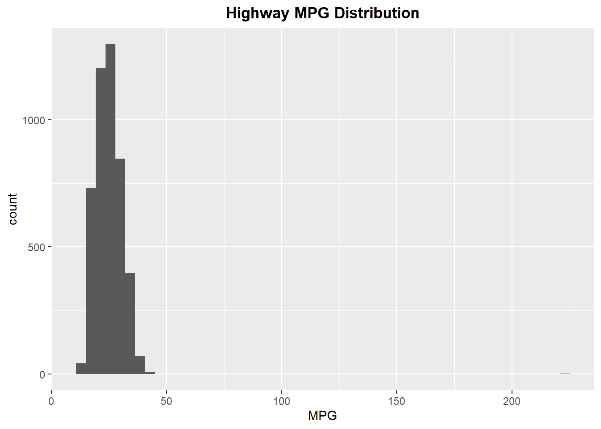
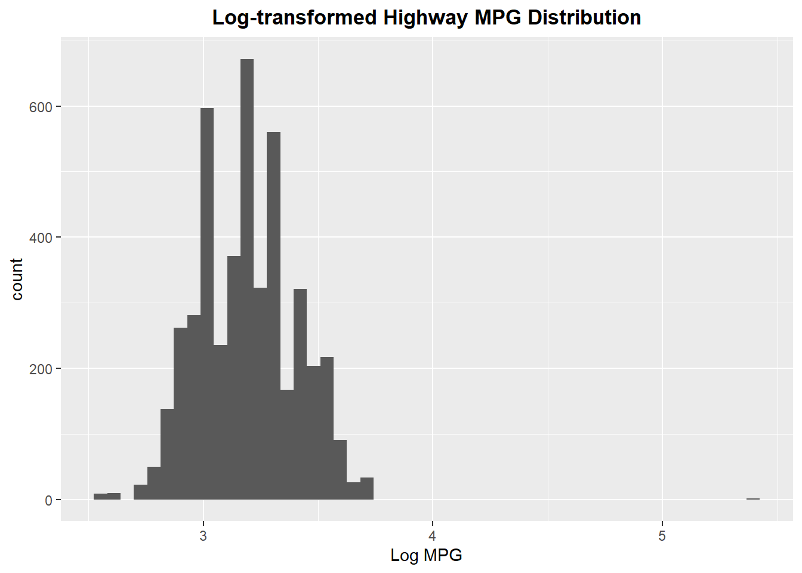
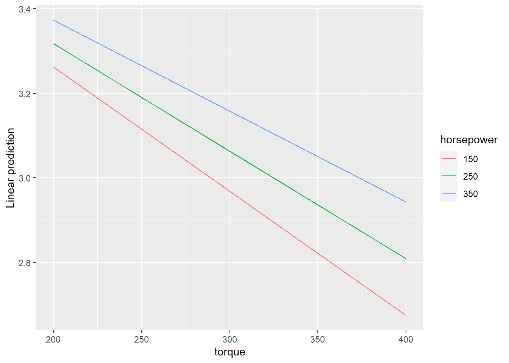

library(microbenchmark)
library(tidyverse)
library(dplyr)
library(ggplot2)
library(emmeans)
library(interactions)STATS506_ProblemSet2
git_address:“https://github.com/JiaweiQin-UM/STATS506.git”
Load Packages
Problem 1
a.
Version: loop
#' Dice Game: Loop Version
#'
#' @param n An integer specifying the number of dice to roll.
#'
#' @return The total winnings or losses after `n` rolls.
play_dice_m1 <- function(n){
# try and error
if( n < 1){
stop('Inputs should be a positive integer.')
}
# start dice game
roll <- sample(1:6, n, replace = TRUE)
total <- 0
# start the loop
for (i in 1:n) {
total <- total -2
if (roll[i] %in% c(3,5)){
total <- total + 2*roll[i]
}
}
# return output
return(total)
}
play_dice_m1(10)[1] 0play_dice_m1(10)[1] -20Version: vector
#' Dice Game: Vectorized Version
#'
#' @param n An integer specifying the number of dice to roll.
#'
#' @return The total winnings or losses after `n` rolls.
play_dice_m2 <- function(n){
# try and error
if( n < 1){
stop('Inputs should be a positive integer.')
}
# start dice game
roll <- sample(1:6, n, replace = TRUE)
# calculate total
total <- -2 * n + sum(ifelse(roll %in% c(3, 5), 2 * roll, 0))
# return output
return(total)
}
play_dice_m2(10)[1] 2play_dice_m2(10)[1] 18Version: table
#' Dice Game: Table Version
#'
#' @param n An integer specifying the number of dice to roll.
#'
#' @return The total winnings or losses after `n` rolls.
#'
play_dice_m3 <- function(n){
# try and error
if( n < 1){
stop('Inputs should be a positive integer.')
}
# start dice game
roll <- sample(1:6, n, replace = TRUE)
roll_table <- table(factor(roll,levels=1:6))
# calculate total
total <- roll_table[3]*2*3 + roll_table[5]*2*5 -2*n
names(total) <- NULL
# return output
return(total)
}
play_dice_m3(10)[1] 16play_dice_m3(10)[1] 16Version: apply function
#' Dice Game: Apply function Version
#'
#' @param n An integer specifying the number of dice to roll.
#'
#' @return The total winnings or losses after `n` rolls.
#'
play_dice_m4 <- function(n){
# try and error
if( n < 1){
stop('Inputs should be a positive integer.')
}
# start dice game
roll <- sample(1:6, n, replace = TRUE)
# calculate total
total <- -2*n +sum(vapply(roll, function(i){
if (i %in% c(3,5)){ return(i*2) } else { return(0) }
}, numeric(1)))
# return output
return(total)
}
play_dice_m4(10)[1] 6play_dice_m4(10)[1] 32b.
# Run each version with input 3
list(
version1 = play_dice_m1(3),
version2 = play_dice_m2(3),
version3 = play_dice_m3(3),
version4 = play_dice_m4(3)
)$version1
[1] 0
$version2
[1] -6
$version3
[1] 4
$version4
[1] 14# Run each version with input 3000
list(
version1 = play_dice_m1(3000),
version2 = play_dice_m2(3000),
version3 = play_dice_m3(3000),
version4 = play_dice_m4(3000)
)$version1
[1] 1724
$version2
[1] 1898
$version3
[1] 2174
$version4
[1] 1828c.
Version: loop
#' Dice Game: Loop Version
#'
#' @param n An integer specifying the number of dice to roll.
#'
#' @return The total winnings or losses after `n` rolls.
seed_play_dice_m1 <- function(n, seed){
# try and error
if( n < 1){
stop('Inputs should be a positive integer.')
}
# set seed
set.seed(seed)
# start dice game
roll <- sample(1:6, n, replace = TRUE)
total <- 0
# start the loop
for (i in 1:n) {
total <- total -2
if (roll[i] %in% c(3,5)){
total <- total + 2*roll[i]
}
}
# return output
return(total)
}Version: vector
#' Dice Game: Vectorized Version
#'
#' @param n An integer specifying the number of dice to roll.
#'
#' @return The total winnings or losses after `n` rolls.
seed_play_dice_m2 <- function(n, seed){
# try and error
if( n < 1){
stop('Inputs should be a positive integer.')
}
# set seed
set.seed(seed)
# start dice game
roll <- sample(1:6, n, replace = TRUE)
# calculate total
total <- -2 * n + sum(ifelse(roll %in% c(3, 5), 2 * roll, 0))
# return output
return(total)
}Version: table
#' Dice Game: Table Version
#'
#' @param n An integer specifying the number of dice to roll.
#'
#' @return The total winnings or losses after `n` rolls.
#'
seed_play_dice_m3 <- function(n, seed){
# try and error
if( n < 1){
stop('Inputs should be a positive integer.')
}
# set seed
set.seed(seed)
# start dice game
roll <- sample(1:6, n, replace = TRUE)
roll_table <- table(factor(roll,levels=1:6))
# calculate total
total <- roll_table[3]*2*3 + roll_table[5]*2*5 -2*n
names(total) <- NULL
# return output
return(total)
}Version: apply function
#' Dice Game: Apply function Version
#'
#' @param n An integer specifying the number of dice to roll.
#'
#' @return The total winnings or losses after `n` rolls.
#'
seed_play_dice_m4 <- function(n, seed){
# try and error
if( n < 1){
stop('Inputs should be a positive integer.')
}
# set seed
set.seed(seed)
# start dice game
roll <- sample(1:6, n, replace = TRUE)
# calculate total
total <- -2*n +sum(vapply(roll, function(i){
if (i %in% c(3,5)){ return(i*2) } else { return(0) }
}, numeric(1)))
# return output
return(total)
}# Run each version with input 3
list(
version1 = seed_play_dice_m1(3, seed =42),
version2 = seed_play_dice_m2(3, seed =42),
version3 = seed_play_dice_m3(3, seed =42),
version4 = seed_play_dice_m4(3, seed =42)
)$version1
[1] 4
$version2
[1] 4
$version3
[1] 4
$version4
[1] 4# Run each version with input 3000
list(
version1 = seed_play_dice_m1(3000, seed =42),
version2 = seed_play_dice_m2(3000, seed =42),
version3 = seed_play_dice_m3(3000, seed =42),
version4 = seed_play_dice_m4(3000, seed =42)
)$version1
[1] 1962
$version2
[1] 1962
$version3
[1] 1962
$version4
[1] 1962d. Microbenchmark
microbenchmark(loop = seed_play_dice_m1(1000, seed =42),
vector = seed_play_dice_m2(1000, seed =42),
table = seed_play_dice_m3(1000, seed =42),
apply = seed_play_dice_m4(1000, seed =42))Unit: microseconds
expr min lq mean median uq max neval cld
loop 925.5 1012.65 1112.141 1089.55 1143.45 3866.3 100 a
vector 102.5 114.05 135.346 122.90 136.00 287.0 100 b
table 176.3 203.50 226.436 214.30 234.15 441.1 100 c
apply 1349.5 1474.45 1633.063 1588.65 1644.10 4274.1 100 dmicrobenchmark(loop = seed_play_dice_m1(100000, seed =42),
vector = seed_play_dice_m2(100000, seed =42),
table = seed_play_dice_m3(100000, seed =42),
apply = seed_play_dice_m4(100000, seed =42))Unit: milliseconds
expr min lq mean median uq max neval cld
loop 99.0205 109.21670 118.49484 113.98485 118.73725 230.0995 100 a
vector 8.1809 9.56225 10.83473 10.21635 11.98745 16.4872 100 b
table 9.0305 10.41480 11.79287 11.04780 12.27225 30.4442 100 b
apply 145.8946 155.70685 162.98025 163.10265 167.52410 197.6396 100 cFor large inputs, the execution time increases significantly. The function using the “apply” family consistently has the longest execution time, followed by the loop-based implementation, regardless of whether the input is large or small. The vector method takes the shortest execution time.
e. Monte Carlo
# Monte Carlo Simulation
mc_simulation <- function(n, iterations, seed) {
# use the vector method
results <- replicate(iterations, seed_play_dice_m2(n, seed))
return(mean(results))
}
average_winnings <- mc_simulation(1000, 10000, seed=42)
average_winnings[1] 514It is not a fair game, and the play tend to win more than they cost.For each round of roll, we have \(E(winngs\_or\_losses)=\frac{4}{6}\cdot0+\frac{1}{6}\cdot2\cdot3+\frac{1}{6}\cdot2\cdot5=\frac{2}{3}>0\)
Problem 2
a. Read file
df <- read.csv("C:/Users/Lenovo/Desktop/24FA/STATS506/HW2/cars.csv")
head(df) Dimensions.Height Dimensions.Length Dimensions.Width
1 140 143 202
2 140 143 202
3 140 143 202
4 140 143 202
5 140 143 202
6 91 17 62
Engine.Information.Driveline Engine.Information.Engine.Type
1 All-wheel drive Audi 3.2L 6 cylinder 250hp 236ft-lbs
2 Front-wheel drive Audi 2.0L 4 cylinder 200 hp 207 ft-lbs Turbo
3 Front-wheel drive Audi 2.0L 4 cylinder 200 hp 207 ft-lbs Turbo
4 All-wheel drive Audi 2.0L 4 cylinder 200 hp 207 ft-lbs Turbo
5 All-wheel drive Audi 2.0L 4 cylinder 200 hp 207 ft-lbs Turbo
6 All-wheel drive Audi 3.2L 6 cylinder 265hp 243 ft-lbs
Engine.Information.Hybrid Engine.Information.Number.of.Forward.Gears
1 True 6
2 True 6
3 True 6
4 True 6
5 True 6
6 True 6
Engine.Information.Transmission Fuel.Information.City.mpg
1 6 Speed Automatic Select Shift 18
2 6 Speed Automatic Select Shift 22
3 6 Speed Manual 21
4 6 Speed Automatic Select Shift 21
5 6 Speed Automatic Select Shift 21
6 6 Speed Manual 16
Fuel.Information.Fuel.Type Fuel.Information.Highway.mpg
1 Gasoline 25
2 Gasoline 28
3 Gasoline 30
4 Gasoline 28
5 Gasoline 28
6 Gasoline 27
Identification.Classification Identification.ID Identification.Make
1 Automatic transmission 2009 Audi A3 3.2 Audi
2 Automatic transmission 2009 Audi A3 2.0 T AT Audi
3 Manual transmission 2009 Audi A3 2.0 T Audi
4 Automatic transmission 2009 Audi A3 2.0 T Quattro Audi
5 Automatic transmission 2009 Audi A3 2.0 T Quattro Audi
6 Manual transmission 2009 Audi A5 3.2 Audi
Identification.Model.Year Identification.Year
1 2009 Audi A3 2009
2 2009 Audi A3 2009
3 2009 Audi A3 2009
4 2009 Audi A3 2009
5 2009 Audi A3 2009
6 2009 Audi A5 2009
Engine.Information.Engine.Statistics.Horsepower
1 250
2 200
3 200
4 200
5 200
6 265
Engine.Information.Engine.Statistics.Torque
1 236
2 207
3 207
4 207
5 207
6 243# View column names
colnames(df) [1] "Dimensions.Height"
[2] "Dimensions.Length"
[3] "Dimensions.Width"
[4] "Engine.Information.Driveline"
[5] "Engine.Information.Engine.Type"
[6] "Engine.Information.Hybrid"
[7] "Engine.Information.Number.of.Forward.Gears"
[8] "Engine.Information.Transmission"
[9] "Fuel.Information.City.mpg"
[10] "Fuel.Information.Fuel.Type"
[11] "Fuel.Information.Highway.mpg"
[12] "Identification.Classification"
[13] "Identification.ID"
[14] "Identification.Make"
[15] "Identification.Model.Year"
[16] "Identification.Year"
[17] "Engine.Information.Engine.Statistics.Horsepower"
[18] "Engine.Information.Engine.Statistics.Torque" names(df) <- c("height", "length", "width", "driveline", "engine_type", "hybrid", "gears_num", "transmission", "mpg_city", "fuel_type", "mpg_hwy", "class", "ID", "make", "model_year", "year", "horsepower", "torque")b. Rename
car_gas <- df[df$fuel_type=='Gasoline',]
head(car_gas) height length width driveline
1 140 143 202 All-wheel drive
2 140 143 202 Front-wheel drive
3 140 143 202 Front-wheel drive
4 140 143 202 All-wheel drive
5 140 143 202 All-wheel drive
6 91 17 62 All-wheel drive
engine_type hybrid gears_num
1 Audi 3.2L 6 cylinder 250hp 236ft-lbs True 6
2 Audi 2.0L 4 cylinder 200 hp 207 ft-lbs Turbo True 6
3 Audi 2.0L 4 cylinder 200 hp 207 ft-lbs Turbo True 6
4 Audi 2.0L 4 cylinder 200 hp 207 ft-lbs Turbo True 6
5 Audi 2.0L 4 cylinder 200 hp 207 ft-lbs Turbo True 6
6 Audi 3.2L 6 cylinder 265hp 243 ft-lbs True 6
transmission mpg_city fuel_type mpg_hwy
1 6 Speed Automatic Select Shift 18 Gasoline 25
2 6 Speed Automatic Select Shift 22 Gasoline 28
3 6 Speed Manual 21 Gasoline 30
4 6 Speed Automatic Select Shift 21 Gasoline 28
5 6 Speed Automatic Select Shift 21 Gasoline 28
6 6 Speed Manual 16 Gasoline 27
class ID make model_year year
1 Automatic transmission 2009 Audi A3 3.2 Audi 2009 Audi A3 2009
2 Automatic transmission 2009 Audi A3 2.0 T AT Audi 2009 Audi A3 2009
3 Manual transmission 2009 Audi A3 2.0 T Audi 2009 Audi A3 2009
4 Automatic transmission 2009 Audi A3 2.0 T Quattro Audi 2009 Audi A3 2009
5 Automatic transmission 2009 Audi A3 2.0 T Quattro Audi 2009 Audi A3 2009
6 Manual transmission 2009 Audi A5 3.2 Audi 2009 Audi A5 2009
horsepower torque
1 250 236
2 200 207
3 200 207
4 200 207
5 200 207
6 265 243nrow(car_gas)[1] 4591c. Log-transformation
car_gas$mpg_hwy %>% summary Min. 1st Qu. Median Mean 3rd Qu. Max.
13.00 21.00 25.00 24.97 28.00 223.00 # distribution of highway MPG
ggplot() + geom_histogram(aes(car_gas$mpg_hwy),bins = 50) +
ggtitle( "Highway MPG Distribution") +
xlab("MPG") +
theme( plot.title = element_text(hjust = 0.5, face = "bold") )
# Log transformation example (if distribution is skewed)
car_gas %>%
mutate(mpg_hwy = log(mpg_hwy)) %>%
ggplot() + geom_histogram(aes(mpg_hwy),bins = 50) +
ggtitle( "Log-transformed Highway MPG Distribution") +
xlab("Log MPG") +
theme( plot.title = element_text(hjust = 0.5, face = "bold") )
d. Fit model
# replace by log transformation
car_gas <- car_gas %>% mutate(mpg_hwy = log(mpg_hwy))# fit the model
f1 <- lm( mpg_hwy ~ torque + horsepower + height + length + width + as.factor(year), data = car_gas )
# result
summary(f1)
Call:
lm(formula = mpg_hwy ~ torque + horsepower + height + length +
width + as.factor(year), data = car_gas)
Residuals:
Min 1Q Median 3Q Max
-0.54759 -0.09385 -0.00414 0.09894 2.41852
Coefficients:
Estimate Std. Error t value Pr(>|t|)
(Intercept) 3.507e+00 2.216e-02 158.236 < 2e-16 ***
torque -2.294e-03 6.757e-05 -33.956 < 2e-16 ***
horsepower 9.238e-04 6.984e-05 13.227 < 2e-16 ***
height 4.050e-04 3.456e-05 11.719 < 2e-16 ***
length 3.475e-05 2.710e-05 1.282 0.19980
width -8.722e-05 2.774e-05 -3.144 0.00168 **
as.factor(year)2010 -2.181e-02 2.076e-02 -1.051 0.29342
as.factor(year)2011 -2.430e-03 2.072e-02 -0.117 0.90665
as.factor(year)2012 4.012e-02 2.089e-02 1.921 0.05485 .
---
Signif. codes: 0 '***' 0.001 '**' 0.01 '*' 0.05 '.' 0.1 ' ' 1
Residual standard error: 0.1412 on 4582 degrees of freedom
Multiple R-squared: 0.5638, Adjusted R-squared: 0.563
F-statistic: 740.3 on 8 and 4582 DF, p-value: < 2.2e-16p-value of torque is less than 0.05, which means torque is significantly related to MPG on the highway. The coefficient of torque is -2.294e-03.
Holding the horsepower of the engine, all three dimensions of the car, and the year the car was released constant, an unit increase of torque is predicted to yield 0.002294 lower MPG on the highway, on average.
e. Interaction model
# fit the model with interaction
f2 <- lm(mpg_hwy ~ horsepower*torque + height + length + width +
as.factor(year), data = car_gas)
# result
summary(f2)
Call:
lm(formula = mpg_hwy ~ horsepower * torque + height + length +
width + as.factor(year), data = car_gas)
Residuals:
Min 1Q Median 3Q Max
-0.55760 -0.08378 -0.00157 0.08194 2.45015
Coefficients:
Estimate Std. Error t value Pr(>|t|)
(Intercept) 3.854e+00 2.384e-02 161.669 < 2e-16 ***
horsepower -2.339e-04 7.632e-05 -3.064 0.00219 **
torque -3.533e-03 7.615e-05 -46.390 < 2e-16 ***
height 2.876e-04 3.215e-05 8.946 < 2e-16 ***
length 3.643e-05 2.500e-05 1.457 0.14525
width -1.165e-04 2.561e-05 -4.548 5.55e-06 ***
as.factor(year)2010 -2.563e-02 1.915e-02 -1.338 0.18095
as.factor(year)2011 -5.886e-03 1.912e-02 -0.308 0.75822
as.factor(year)2012 3.640e-02 1.927e-02 1.889 0.05896 .
horsepower:torque 3.939e-06 1.391e-07 28.314 < 2e-16 ***
---
Signif. codes: 0 '***' 0.001 '**' 0.01 '*' 0.05 '.' 0.1 ' ' 1
Residual standard error: 0.1302 on 4581 degrees of freedom
Multiple R-squared: 0.6288, Adjusted R-squared: 0.628
F-statistic: 862.1 on 9 and 4581 DF, p-value: < 2.2e-16car_gas %>% select(torque,horsepower) %>% summary torque horsepower
Min. : 98.0 Min. :100.0
1st Qu.:177.0 1st Qu.:185.0
Median :257.0 Median :263.0
Mean :267.2 Mean :267.5
3rd Qu.:332.0 3rd Qu.:317.0
Max. :774.0 Max. :638.0 emmip(f2, horsepower ~ torque, at = list(horsepower = c(150, 250, 350),
torque = c(200, 300, 400)))
f. Matrix
# create matrix
X <- model.matrix(mpg_hwy ~ horsepower + torque + height + length +
width + as.factor(year), data = car_gas)
y <- car_gas$mpg_hwy
# calculate beta_hat
beta_hat <- solve(t(X)%*%X)%*%t(X)%*%y
# comparison
cbind(f1$coef, beta_hat) [,1] [,2]
(Intercept) 3.506922e+00 3.506922e+00
torque -2.294331e-03 9.238126e-04
horsepower 9.238126e-04 -2.294331e-03
height 4.049897e-04 4.049897e-04
length 3.475207e-05 3.475207e-05
width -8.722295e-05 -8.722295e-05
as.factor(year)2010 -2.181247e-02 -2.181247e-02
as.factor(year)2011 -2.430359e-03 -2.430359e-03
as.factor(year)2012 4.011528e-02 4.011528e-02Therefore, these 2 methods get the same result.